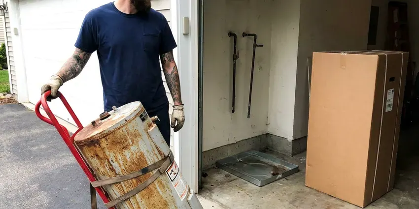
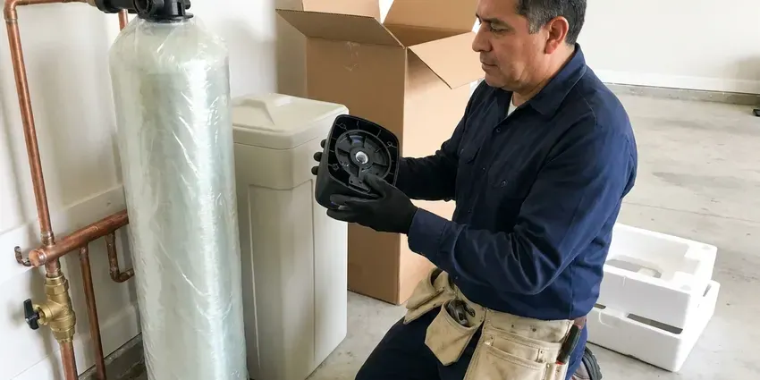
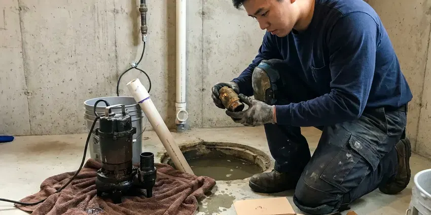
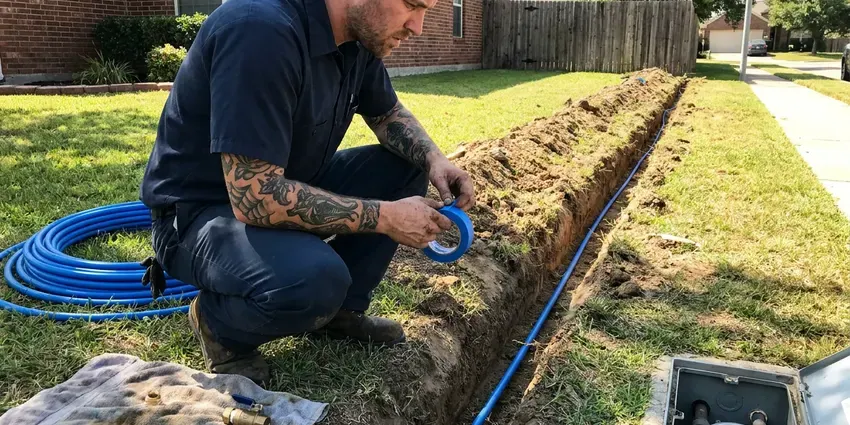
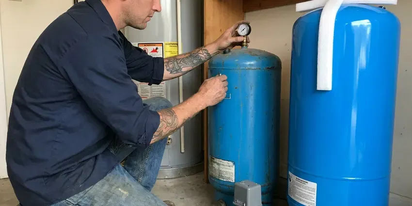

Pipe Replacement in West Allis, WI
For lasting pipe replacement solutions in West Allis, WI, trust the experienced plumbers at HKV Plumbing.
- PEX-A and Copper Options
- Expert, Certified Plumbers
- Small, Planned Wall Openings
- Licensed & Insured
End Pinhole Leaks and Low Pressure With Pipe Replacement in West Allis, WI.
Our team is ready to provide a thorough inspection and offer the best pipe replacement options for your home.
Professional Pipe Replacement Services in West Allis, WI
At HKV Plumbing, we understand the challenges of aging or damaged plumbing systems in West Allis, WI. We offer expert pipe replacement, using high-quality materials and proven techniques to ensure your new pipes provide reliable service for many decades.
Our expertise includes:
- Galvanized, polybutylene and pinhole-leak copper replacement
- Drain and sewer line upgrades
- Whole-home repipes with PEX-A manifolds or copper trunk lines

Additional Plumbing Replacement Services in West Allis, WI
When repairs are no longer enough, our replacement services in West Allis, WI deliver durable upgrades that restore full performance.


West Allis water heater replacement specialists

Water Softener Replacement near West Allis

Sump Pump Replacement near West Allis

Water Line Replacement in West Allis

Customers
Why Choose HKV Plumbing for Pipe Replacement in West Allis, WI?
Some older neighborhoods still have lead service lines, and many communities are working to remove them over time. In slab homes, original water lines often run under the concrete where leaks are hard to reach. Rerouting new pipe overhead through the attic avoids breaking the slab and makes future repairs much easier.
- Expert Diagnosis, Our team uses modern tools to pinpoint the exact location and cause of your pipe issues, avoiding unnecessary work.
- Quality Materials, We use only top-quality, long-lasting materials like PEX and copper, providing a durable and reliable plumbing system for your home.
- Clear Communication, We keep you informed throughout the entire pipe replacement process, from initial assessment to project completion.
Citywide Coverage
HKV Plumbing is proud to serve every neighborhood in West Allis, offering quick and reliable pipe replacement services wherever you are located.
Experienced Team
The HKV Plumbing team is routinely trained on the latest pipe materials and installation techniques, ensuring we deliver the most effective solutions for your home in West Allis, WI.
Safety-First Approach
Attic lines are insulated and protected from heat and cold, and any exterior PEX is shielded from UV exposure. We test the entire system under pressure before turning on service.
Trusted Certified West Allis Plumbing Services Professionals
At HKV Plumbing, we take pride in providing licensed, certified plumbing services throughout West Allis, WI. Backed by leading industry credentials, our experienced plumbers combine technical skill with genuine customer care. Whether it is repair, installation, or maintenance, we follow strict safety and quality standards to deliver lasting results you can trust.
Call Us Now PHCC Plumbing Contractor Recognition
PHCC Plumbing Contractor Recognition Better Business Bureau (BBB) Accreditation
Better Business Bureau (BBB) Accreditation Angi Certified Pro
Angi Certified Pro ISO 9001 Quality Management Certification
ISO 9001 Quality Management CertificationDurable Pipe Replacement Services in West Allis, WI
Water Line Replacement vs. Repair in West Allis, WI
Deciding between pipe repair and full replacement depends on several factors, including the age of your pipes, the extent of the damage, and the frequency of past issues. A small, isolated leak might be repaired, but widespread corrosion or multiple leaks usually warrant replacement. HKV Plumbing provides straightforward assessments in West Allis, WI, explaining the pros and cons of each option. We help you make an informed decision that offers the most cost-effective and long-lasting solution for your home.

Galvanized Pipe Replacement in West Allis, WI
Many older homes in West Allis, WI still have galvanized steel pipes, which are vulnerable to rust and corrosion on the inside. This leads to reduced water pressure, discolored water, and eventual leaks. HKV Plumbing provides comprehensive galvanized pipe replacement services, removing these failing pipes and installing new, modern materials. Upgrading from galvanized pipes not only improves your water quality and pressure but also protects your home from potential water damage caused by deteriorating plumbing.
Drain Pipe Replacement in West Allis, WI
Cast iron drain pipe in older homes can rust through at the bottom, while some ABS from the 1980s was made with defective resin that cracks. Signs include sewer odors, slow drains and stains on ceilings below upstairs bathrooms. We camera the line first, then replace reachable sections with PVC or ABS. Under-slab drains can be tunneled, rerouted or lined depending on location. We explain the options with the camera footage on screen.
Copper Pinhole Leak Replacement in West Allis, WI
Pinhole leaks in copper usually start as a small green stain or a damp spot on drywall. They are caused by a mix of water chemistry, high velocity and thin Type M pipe, and once they begin they tend to keep coming back. Patching each leak costs $300 to $800 per visit plus drywall repair. We can replace the affected branch or repipe the home with PEX, which does not develop pinholes. We help you weigh the cost of both paths.
Slab Leak Pipe Repair and Replacement in West Allis
Slab leaks, where pipes under your concrete foundation leak, are a significant concern for homeowners in West Allis. These leaks can cause foundation damage, mold growth, and wasted water. HKV Plumbing uses modern leak detection technology to pinpoint the exact location of the leak. Depending on the severity and accessibility, we offer targeted pipe repair or rerouting and replacement solutions to fully resolve the issue, protecting your home's structural integrity.
Whole-Home Repiping in West Allis
If your home in West Allis is older and experiencing frequent leaks, low water pressure throughout, or discolored water from multiple fixtures, a whole-home repiping might be the most cost-effective long-term solution. We can replace all the old galvanized steel or polybutylene pipes with modern, durable PEX or copper piping. This upgrades your entire water delivery system, greatly improving water quality and pressure while eliminating future leak concerns from aging infrastructure.
PEX Pipe Installation in West Allis
PEX (cross-linked polyethylene) piping is a common choice for modern pipe replacement projects in West Allis due to its flexibility, durability, and resistance to corrosion and freezing. It's also less expensive to install than copper. Water softeners are a standard feature in many Wisconsin homes, helping protect water heaters, fixtures and appliances from scale. HKV Plumbing carefully installs PEX piping for full home repipes or targeted section replacements, providing a reliable and long-lasting plumbing solution that handles local water conditions well.

Copper Pipe Replacement in West Allis, WI
Copper piping is a long-standing, reliable choice known for its durability and resistance to corrosion. While it's a premium material, its longevity often makes it a cost-effective solution over time. HKV Plumbing offers expert copper pipe replacement for sections or entire homes in West Allis, WI. Our plumbers are skilled in the precise soldering and installation techniques required for copper, ensuring a leak-proof and robust plumbing system that holds up year after year.
Pipe Replacement Near Me in West Allis, WI
When you search for "pipe replacement near me" in West Allis, WI, HKV Plumbing is your go-to local expert. We are very familiar with the plumbing infrastructure throughout the area, from older neighborhoods to newer developments. Our proximity allows us to provide fast, efficient service when you need it most.
Choosing a local company like HKV Plumbing for your pipe replacement means you get personal service from plumbers who know the local infrastructure and regulations in West Allis, WI. We are committed to serving our community with honest advice and high-quality workmanship, ensuring your plumbing system is sturdy and reliable for years to come.
HKV Plumbing at a Glance
- Fully licensed plumbing team covering West Allis, WI
- Same-day appointments and 24/7 emergency response
- Upfront, flat-rate pricing before work begins
- 4.8-star rated by 448+ Wisconsin customers
West Allis Map
West Allis Information
- Population
- 58,874
- Area codes
- 414/262/920
- Service area
- West Allis and communities within 40 miles
- Nearby
- Wauwatosa, Milwaukee, Waukesha, Racine
Ground movement and temperature changes can stress older pipes, so dependable pipe replacement is key for maintaining a healthy plumbing system in your West Allis, WI home.
Expert Services
Trust our professionals for reliable HKV Plumbing solutions in West Allis, WI.
Our Specialized Plumbing Services in West Allis, WI
At HKV Plumbing, we provide a complete range of plumbing services across West Allis, WI. From leak detection to full system installations, our team ensures fast, precise, and affordable service for both residential and commercial properties. Explore our core services below:


How Our Pipe Replacement Process Works in West Allis, WI
We follow a proven, step-by-step approach to ensure your pipe replacement is handled professionally from start to finish.
Request a Quote
Contact HKV Plumbing today at (414) 432-4641 to schedule an initial consultation. We'll discuss your concerns and set up an on-site assessment at your convenience.
On-Site Assessment
Our expert plumber will visit your West Allis home to carefully inspect your existing pipes. We use diagnostic tools to identify the cause and extent of the issue, whether it's corrosion, leaks, or age.
Detailed Proposal
Based on our assessment, we'll provide a complete, transparent proposal outlining the recommended pipe replacement. This includes material options, scope of work, timeline, and a firm, upfront cost.
Frequently Asked Questions About Pipe Replacement in West Allis
The cost of pipe replacement in West Allis, WI varies widely depending on the extent of the damage, the type of pipes being replaced, and the materials chosen. A small section replacement might range from $500 to $2,500, while a full home repipe could be anywhere from $4,000 to $15,000 or more. We provide clear, upfront pricing after a thorough assessment.
Modern PEX pipes typically last 25 to 50 years, and copper pipes can last 50 to 70 years or even longer, depending on water quality and installation. This is a major improvement over older materials like galvanized steel, which often fail within 20 to 50 years.
We use trusted, high-quality brands for all our pipe replacement projects. For PEX, we often use products from Uponor (Wirsbo) or Viega, known for their reliability. For copper, we source from reputable manufacturers like Mueller Streamline. Our fittings are always top-grade brass or approved PEX crimp or expansion fittings to ensure tight connections in your West Allis home.
Small reachable repairs may be possible for experienced DIYers. Whole-home repiping requires proper tools, code knowledge, permits and inspection.
Water softeners are a standard feature in many Wisconsin homes, helping protect water heaters, fixtures and appliances from scale. After pipe replacement, consider installing a whole-home water filter or softener to reduce mineral buildup and corrosion. Also, ensuring proper insulation for exposed pipes can prevent freezing in colder months. Regular plumbing inspections can also spot minor issues before they become major problems.
Common signs include frequent leaks, low water pressure, discolored or foul-smelling water, banging noises in the walls, and visible corrosion on exposed pipes. If you notice any of these issues in your West Allis home, it's a good idea to have your plumbing system inspected.
PEX is more flexible, resists scale and does not develop pinhole leaks. Copper is rigid, heat tolerant and preferred by some homeowners, so we price both.
Yes, HKV Plumbing understands that pipe replacement can be a significant investment. We offer various financing options to help make your plumbing upgrades more affordable and manageable. Please speak with our team for more details on available plans that suit your budget.
What People Are Saying About Our Plumbing Experts?

Sofia M.
Two new toilets installed in one visit, no mess left behind, and the tech even adjusted a faucet he noticed was dripping. Fair pricing and really friendly.
Toilet Installation · Milwaukee, WI
Emily R.
I called HKV Plumbing for plumbing repair, and the technician was fast, polite, and thorough. They explained the problem clearly and fixed it the same day. I will definitely hire them again. Highly recommended!
Plumbing Repair · Milwaukee, WI
Patricia H.
We had a slab leak that two other companies could not find. HKV Plumbing located it in under an hour, explained our options, and the price matched the quote to the dollar.
Slab Leak Repair · Milwaukee, WI
Robert G.
The trenchless sewer replacement saved our front yard. They walked us through the camera inspection footage first so we knew exactly what we were paying for.
Sewer Line Replacement · West Allis, WI
Daniel K.
A pipe burst at 11 pm and they actually answered. The plumber showed up within the hour, shut everything down, and had us back to normal the next morning. Could not ask for more.
Emergency Plumbing · West Allis, WILaura S.
I scheduled a water heater replacement, and the team made the process smooth and affordable. The new unit works perfectly, and they cleaned up after completing the job.
Water Heater Replacement · Sheboygan, WI